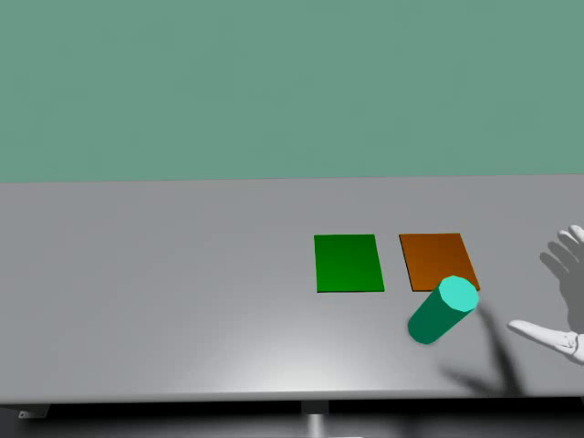
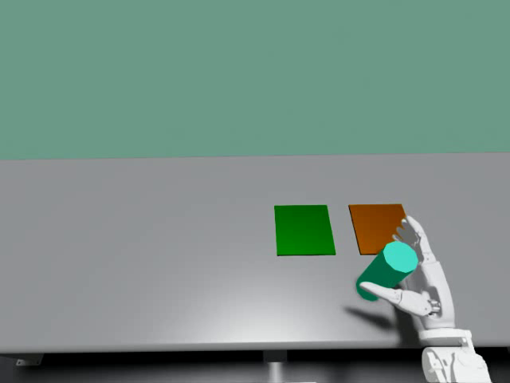
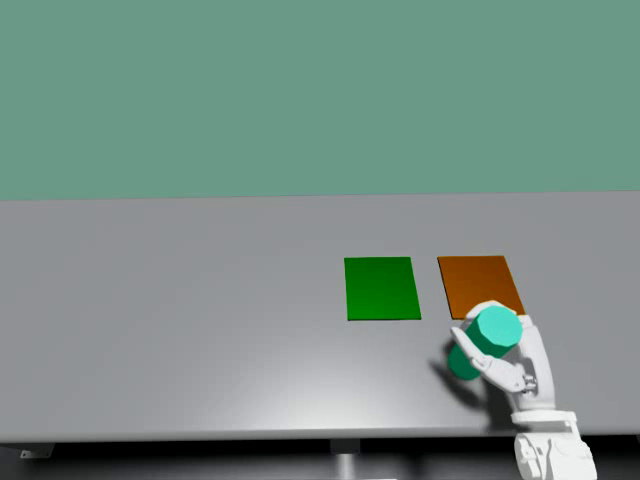
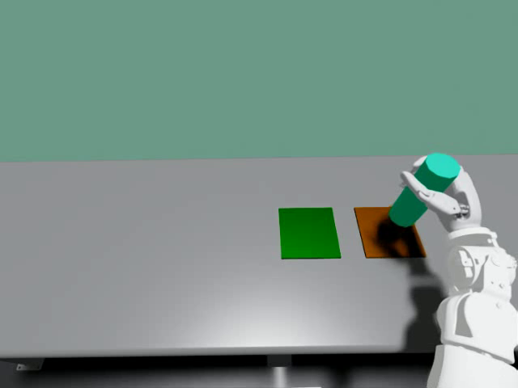
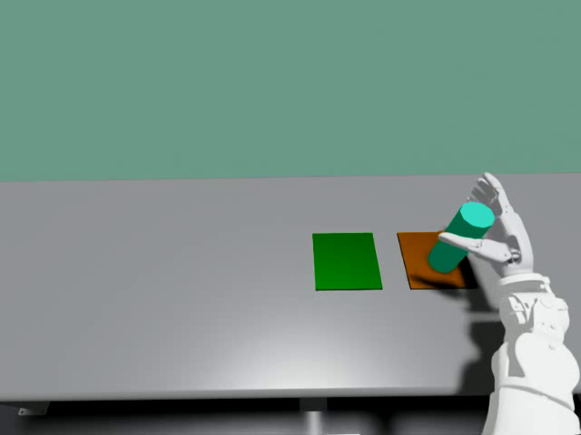
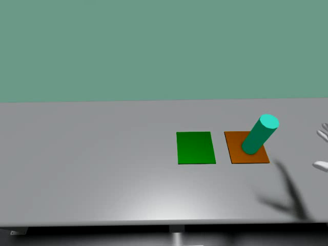
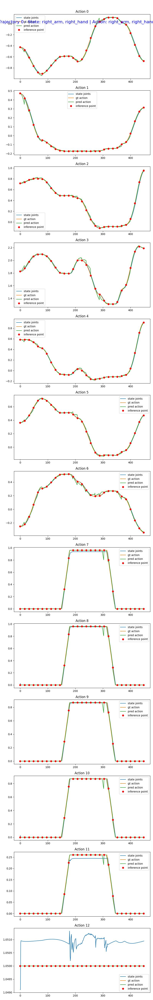
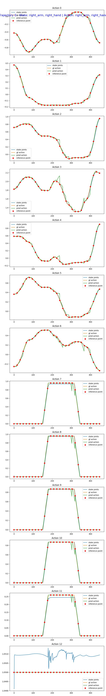

獨立 repo Isaac-GR00T-VLM · 對齊附件 PDF「Cosmos-Reason-2（可置換權重）」流程 · 全程於 H100 + uv，不修改 Isaac-GR00T_n1d7。
Cosmos-Reason2-2B (Qwen3-VL) PEFT LoRA r=16 teacher: Qwen3-VL-30B-A3B (MoE) OpenArm O6
架構產物與路徑VQA 資料集微調流程評估與 MSE/MAE案例分析Teacher 比較結論附錄§8 部署
端到端訓練與部署資料流見本報告 §1 與 §8（已整合原獨立檔 architecture_dataflow.html）。一般概念（LoRA / MoE / 多模態）：docs/llm_vlm_finetuning_guide.html。
| 代號 | 路徑（H100，IsaacLab-GR00T 根目錄下） | 結構 / 用途 |
|---|---|---|
| 產物 A | artifacts/checkpoints/gr00t/lora_tuned_vlm/Cosmos-Reason2-2B-lora-merged/ | dense 完整 36 層；純 transformers 可載入、不依賴 GR00T；VQA 用 + swap 來源 |
| swapped VLA | artifacts/checkpoints/gr00t/swapped_checkpoints/N1_7_cosmosR2lora_swapped/ | GR00T N1.7 VLA，backbone VLM 換成產物 A、保留 action head；action 評估用 |
| base | Isaac-GR00T-VLM/artifacts/Cosmos-Reason2-2B-base/ | 微調前 Cosmos-R2 快照；VLM VQA 對照基準 |
artifacts/checkpoints/gr00t/ 下：LoRA-tuned VLM → lora_tuned_vlm/，swapped checkpoint → swapped_checkpoints/。swap 的 backbone 權重相容性 = 493/493 keys 完全吻合（0 missing、0 shape-mismatch）。Q：影像只從 mp4 抽首/中/尾，足夠嗎？是固定規範嗎？
不是固定規範。frames_per_episode 是可調參數（預設 3，取 early/mid/late 以涵蓋「動作前/中/後」三個階段，讓 Temporal 題型有依據）。不足之處：OpenArm 0403 只有單相機、2 種任務（橘/綠盤），所以視覺多樣性偏低 → 屬領域內（in-distribution）資料，泛化有限。要更足夠可：提高每集抽幀數、納入多相機（head/wrist）、納入更多資料集（real+sim）。
Q：模型怎麼知道要產生什麼問答格式？
兩條來源：(1) template 是寫死的規則（固定問句 + 由任務字串解析答案，如顏色），保證格式與正確性；(2) teacher-VLM 由 prompt 指定輸出格式——prompt 要求它「只回傳 JSON list of {type, question, answer}」，程式再解析 JSON、過濾不合格者。所以「格式」來自 prompt 規範 + 後處理驗證，不是模型自行決定。
Q：七種題型分佈是制式規範嗎？
不是。7 類（Attribute / Mechanics / Reasoning / Spatial / Summary / Temporal / Trajectory）是我為對齊附件 PDF 的評測分類而定的。template 穩定產出其中 4 類（Summary/Trajectory/Attribute/Temporal）；teacher 被要求涵蓋全部 7 類、補足較難的 Spatial/Reasoning/Mechanics。分佈因此非均勻（見下表）。
Q：2499 是怎麼定義的？
不是預設目標值，而是累加結果：100 episodes × 3 frames = 300 影格；每影格 = template 4 題 + teacher k 題（k 浮動，30B-A3B 約 3–4，偶爾更多）。總和 ≈ 300 ×（4 + ~4.3）= 2499。改 num_episodes / frames_per_episode 就會改變總數。
Q：teacher-VLM 如何知道要補什麼、生成什麼？
它不是「知道缺什麼」。流程是：餵給它 影像 + 任務字串 + 7 類型名稱，prompt 要求「產生涵蓋這些類型的多樣問答」；它依影像內容生成。template 才是「保證骨幹」，teacher 是「增廣多樣性」。兩者合併、去重後即資料集。
| 來源 | type | question → answer |
|---|---|---|
| template | Summary | What is the dual-arm robot doing? → can-sorting: place the can on the orange plate |
| template | Attribute | Color of the target plate? → orange |
| template | Temporal | Has the can been placed yet? → (early) No, still moving / (late) Yes |
| teacher | Spatial | Where is the green plate relative to the orange plate? → To the right |
| teacher | Mechanics | How is the can positioned on the plate? → standing upright |
| teacher | Reasoning | Why place the can on the plate? → to organize objects |
GR00T N1.7 (Gr00tN1d7) = backbone（VLM） + action head（DiT 流匹配）。backbone 是 Qwen3Backbone，內部 self.model = Qwen3VLForConditionalGeneration —— 那就是 Cosmos-Reason2-2B（VLA 內被裁剪到 select_layer=12 層）。我們不動 VLA，改為「獨立載入完整 Cosmos-R2 → LoRA → 合併 → 把權重塞回 VLA 的 backbone.model.*」。
回答你的問題：① 「VLA 只吃 layer 0–15」指 backbone 內 Qwen3 LLM 那一疊（28 層裁到前 16 層），不是 DiT 的 32 層——這是兩個獨立堆疊：LLM 在 VLM backbone 內、DiT 在 action head 內，層數互不相干。② vlln ＝ VL features 的 LayerNorm(2048)，把 backbone 輸出先正規化再進 adapter/DiT，屬 action_head。③ 「影像 + 語言」是模型輸入、不屬於 VLM backbone——它們要經 vision encoder／LLM 才產生 VL features，圖中已移到 backbone 框外。
數字校正：Cosmos-Reason2-2B 的 LLM 實際為 28 層（§1/§2 早期標示的「36 層」為筆誤）；部署 checkpoint 裁剪到 select_layer=16（程式 dataclass 預設 12，但本機所有 N1_7_fft_* 皆 16）。歸屬一覽：VLM backbone＝vision(24L)+LLM(28→16L)、hidden 2048；VLA action head＝vlln + 4 層 adapter(vl_self_attention) + 32 層 DiT(inner 1536, cross-attn 維度 2048) + state/action 編碼器 + action decoder（OpenArm 動作 26 維、pad 132、horizon 40）。swap 只覆蓋 backbone.model.*（493 keys），其餘 action_head.* 全部保留。
| 步驟 | 目的 / 作用 |
|---|---|
| 1. 生成 VQA | 建立領域問答監督訊號（語言 loss），讓 VLM 學會理解此場景 |
| 2. 載入 Cosmos-R2（完整） | 取得與 VLA backbone 同源的 VLM；獨立訓練不污染 VLA |
| 3. LoRA SFT | 凍結原權重、只學低秩旁路 → 省顯存、避免災難性遺忘、產出可合併權重 |
| 4. merge_and_unload | 把 LoRA 併回主權重 → 得到形狀與原模型相同的 standalone VLM（產物 A） |
| 5. swap_backbone | 用產物 A 覆蓋 VLA 的 backbone.model.*（交集 493 keys、尊重 16 層裁剪），保留 action head → 產物 B |
| 參數 | 值 | 原因 / 影響 |
|---|---|---|
| lora_r | 16 | 低秩容量；小 r 省參數+抗過擬合，大 r 表達力強。16 為小資料常用折衷 |
| lora_alpha | 32 | 縮放 α/r=2，放大 LoRA 貢獻；過大易不穩 |
| learning_rate | 1e-4 | LoRA 常用；太高震盪、太低收斂慢 |
| batch × grad-accum | 1 × 8 | 有效 batch 8；單卡省顯存，accum 模擬大 batch 穩定梯度 |
| max_steps | 2000 | ≈7 epochs（2250 train）；夠收斂、又不過久 |
| bf16 + grad-ckpt | on | 省顯存、H100 原生 bf16；grad-ckpt 以算力換記憶體 |
實測：loss 2.62 → ~0.15（train_loss），~1.29 s/it，trainable 0.81%（17.4M / 2.14B）。
examples/finetune_cosmos_r2_lora.sh 的預設值）LORA_R=16 / LORA_ALPHA=32？ r 是低秩更新的秩(容量)：r 越大可學越多但參數多、易過擬合；越小更省更正則。16 是領域 SFT 常用折衷。α 是縮放，有效倍率 = α/r = 2（α=2r 啟發式）；α 越大 LoRA 影響越強、過大易不穩。兩者決定「學多少、放多大」。
PER_DEVICE_BATCH_SIZE=1 + GRAD_ACCUM=8？會變慢嗎？ 影像 token 使序列很長、顯存吃重，故 per-device batch 用 1 避免 OOM；grad-accum 8 累積 8 個 micro-batch 才更新一次 → 有效 batch = 8。不是單純變慢：本來就要處理這 8 個樣本，差別只在「8 次前後傳才更新一次」vs「一次大 batch」，總吞吐相近、只是 optimizer step 數較少。H100 80GB 其實可試 batch 2–4 加速；我保守用 1 確保長序列不 OOM，可依顯存調整。
LORA_TARGET=llm 而非 vlm（vision）？ 目標是提升「語言/推理理解」(VQA)，而推理發生在 LLM；故對 LLM 的 q/k/v/o + gate/up/down 投影加 LoRA。調 vision encoder 成本高、對 VQA 推理幫助小、且可能破壞既有視覺特徵。要也調視覺可設 --lora-on-vision 或 --lora-target all-linear。
為何參數比 GR00T 原本微調少很多？ GR00T 的 FinetuneConfig 要訓練整個 VLA（action head + projector + diffusion，加 tune_llm/tune_visual、state/action 增強、embodiment、modality、eval…），旋鈕很多。我們只對 VLM 做 VQA 語言 LoRA——沒有 action head / diffusion / embodiment / modality，自然只需 LoRA + 少數訓練超參。範疇不同：VLM 語言 SFT vs 全 VLA action 訓練。
指令都在 Isaac-GR00T-VLM/ 下；設定集中於 configs/default.yaml。「換自己的影像」= 換 step 1 的 --dataset-path（LeRobot 格式）或直接提供你的 VQA JSONL。
4090（24 GB）也適用，流程完全相同，只有兩點要改：① teacher 換成 dense 的 Qwen/Qwen3-VL-8B-Instruct（30B-A3B MoE 需 ~62 GB、塞不進 24 GB）；② 路徑改本機（資料集 /home/asus/Gits/IsaacLab-GR00T/datasets、產物 artifacts/checkpoints/gr00t/）。LoRA r=16／batch 1×accum 8／bf16＋grad-ckpt 在 24 GB 綽綽有餘（實測訓練僅佔 ~6 GB）。完整 4090 實跑紀錄：docs/plans/2026-06-23-vqa-6phase-qwen3vl8b-4090.md。
腳本：src/vlm_lora/；資料集：/data/VLA/datasets/；產物：IsaacLab-GR00T/artifacts/checkpoints/gr00t/{lora_tuned_vlm,swapped_checkpoints}/。
真實評估在整條軌跡（450 步 × 13 維）逐步計算後取平均。VLM VQA 準確率則是：對 val 每題用模型生成答案，與標準答案做寬鬆比對（包含匹配），按題型統計命中率。
| type | base | LoRA (Product A) | Δ |
|---|---|---|---|
| Attribute | 64.1% | 96.9% | +32.8 |
| Mechanics | 29.0% | 100% | +71.0 |
| Reasoning | 0% | 79.3% | +79.3 |
| Spatial | 74.1% | 92.6% | +18.5 |
| Summary | 0% | 93.8% | +93.8 |
| Temporal | 3.3% | 96.7% | +93.4 |
| Trajectory | 47.2% | 88.9% | +41.7 |
| Overall | 35.3% (88/249) | 93.2% (232/249) | +57.8 |
注意：val 與 train 同分佈（in-distribution），數字偏高；真實泛化需獨立場景測試集。
4090／Qwen3-VL-8B 重跑（6 階段抽幀、1080 題 val）：base 20.7% → LoRA 90.1%（+69.4）。逐型：Attribute 66→91、Mechanics 0→94、Reasoning 0→72、Spatial 21→91、Summary 0→89、Temporal 16→100、Trajectory 52→94。注意：本表（H100、30B-A3B teacher、249 題）與 4090（8B teacher、1080 題）是不同 teacher、不同 val 集，準確率不可直接相比——各自衡量「模型答案是否貼近自己 teacher 的風格」。
| VLA checkpoint | MSE ↓ | MAE ↓ |
|---|---|---|
| baseline（原 Cosmos-R2） | 1.81e-4 | 6.32e-3 |
| swapped（LoRA-tuned Cosmos-R2） | 5.18e-4 | 8.81e-3 |
結論：VLM VQA +57.8%，但 swapped 的 action 略差（MSE 1.81e-4→5.18e-4）——置換後 action head 未針對新 VLM 特徵重訓 → 「VLM 理解提升 ≠ action 提升」。未來可 swap 後輕量再訓 action head。
| VLA checkpoint | 成功率 ↑ | timeout | unsafe |
|---|---|---|---|
| baseline N1_7_fft_0614（100 集） | 89% | 9 | 2 |
| swapped（6 階段 8B LoRA，30 集） | 73% | 3 | 5 |
「為什麼之前用 30B-A3B 看起來比較好、action 影響也比較小？」
① 指標不同、不可直接比：上面 5b 是 open-loop MSE/MAE（單一軌跡逐步預測誤差），這裡是 closed-loop sim 成功率（整集 rollout、誤差會累積、環境會回饋）；closed-loop 本來就比 open-loop 嚴苛、波動也大（swapped 僅 30 集、信賴區間寬）。
② teacher 品質會傳導到 action：30B-A3B 產生的 VQA 標註更多樣、更準，LoRA 學到的 grounding 較「溫和」、對 backbone 特徵擾動小 → 凍結的 adapter/DiT 較能容忍 → action 退化小。8B（dense）＋本次較重的 template 比重 → 監督較窄／較死板 → 特徵位移大 → action 掉得多。
③ 方向一致：兩次都是「VLM 理解大幅提升、swapped action 略退」；改善法相同——swap 後對 action head 輕量再訓，或用更強 teacher ＋更小 LoRA r 以降低特徵位移。
怎麼切 section / segment？每個 episode（此資料集 450 幀）依固定比例抽 6 個代表幀，對應 6 個動作階段——這是啟發式定點抽樣（假設每集都照 approach → grasp → pick → move_to_plate → place → retract 的時序），非逐幀動作偵測。比例 ×(length−1) 取整即幀號。來源：episode 795（圖檔在 docs/assets/，原始在 artifacts/vqa_6phase/images/）。

approach · 0.12 · f53
grasp · 0.30 · f134
pick · 0.45 · f202
move_to_plate · 0.62 · f278
place · 0.80 · f359
retract · 0.96 · f431每個階段幀都生成 7 類題型：template（規則）依「目前階段」給出與階段相關的答案，teacher（Qwen3-VL-8B）再補多樣性。同一張影像、不同題型問不同面向：
| 階段 (幀) | 該階段的代表題型 → 問答 |
|---|---|
| approach (f53) | Temporal 哪個階段？→ approach；Mechanics 手抓著罐子嗎？→ 還沒；Reasoning 下一步？→ 伸向罐子準備抓取 |
| grasp (f134) | Mechanics 手抓著嗎？→ 是，正抓住；Spatial 罐子相對盤子？→ 在前方、離盤子還遠 |
| pick (f202) | Reasoning 下一步？→ 把罐子提起；Spatial → 正搬向盤子 |
| move_to_plate (f278) | Reasoning 下一步？→ 把罐子搬向 {color} 盤；Temporal 放好了嗎？→ 還沒 |
| place (f359) | Temporal 放好了嗎？→ 是；Mechanics 還抓著嗎？→ 已放開 |
| retract (f431) | Reasoning 下一步？→ 收回手臂回 home；＋每幀皆問的 Summary / Attribute / Trajectory（在做什麼／盤子顏色／放哪盤） |
7 類分配規則：Summary／Trajectory／Attribute「全程不變」（每幀都問、答案由任務字串解析）；Temporal／Mechanics／Reasoning／Spatial「隨階段變」（答案依目前 phase 推導）。template 保證 7 類齊全、teacher 增廣。限制：固定比例假設每集時序一致；某集動作偏快／慢時 phase 標註會略偏（已知近似）。對應程式：_PHASE_FRACS 與 template_qa_pairs()（gen_vqa_from_lerobot.py）。

baseline · MSE 1.81e-4
swapped (Cosmos-R2 LoRA) · MSE 5.18e-4原始檔：artifacts/eval/{baseline,swapped}_traj0.jpeg。
30B-A3B 題型覆蓋廣但答案較簡短/籠統；8B 每影格穩定 4 題、推理較具體。詳細的 dense vs MoE 原理（router/expert/協同）見 llm_vlm_finetuning_guide.html。
雙環境：本 repo 的 uv env 做生成/訓練/合併/置換/推論/VLM 評估；VLA open-loop 評估在 H100 的 n1d7 env（需 gr00t）唯讀執行 open_loop_eval.py。本機連 H100 用 python scripts/common/pegasus.py（非 uv run）。
實際踩過並解決的坑：
resolve_model_path() 解析本地 cache snapshot（免 HF_TOKEN、免 hub 探測）。[{type:image},{type:text}]，否則 token=0 vs features=N 報錯。torch==2.7.1 + pytorch-cu128 index（重用 n1d7 快取，免重下載）。dtype=bf16（fp32 會 ~124GB OOM）；模型只載一次（勿逐 frame 重載）。MPLBACKEND=Agg（pegasus 經 Jupyter kernel，預設 inline backend 會報錯）。processor/ 與 experiment_cfg/ 子目錄，否則 Gr00tPolicy 的 AutoProcessor 找不到處理器。數據來源：artifacts/{vqa/stats.json, teacher_compare.json, vqa_acc_*.json, eval/}；案例圖：docs/assets/。本報告整合自原 vlm_lora_finetune.md。
範圍說明：本節是 Isaac-GR00T-VLM 的 serve 交付——把微調後的模型包成 OpenAI 相容的 tool-calling 端點，並驗證模型本身的 tool-calling 能力。下游「agentbot 如何用此端點當大腦、啟動 IsaacLab sim、UI 操作與監控、部署」屬 agentbot 範圍，見 agentbot/docs/USING_VLM_BRAIN.md；跨 repo 交付與 4090 runbook 見 IsaacLab-GR00T/docs/DELIVERY_4090.md。
產物 A（Cosmos-Reason2-2B-lora-merged）可作為 agentbot 編排系統的「Brain」獨立部署。
FastAPI 伺服器將 VLM 包成 OpenAI 相容的 /v1/chat/completions 端點，支援 tools 參數與 tool_calls 回應——
agentbot 的 Gr00tVLMClient 直接消費這個介面，不需要任何橋接層。
產物 A 以 OpenAI 相容 /v1/chat/completions 提供服務；agentbot 的 Gr00tVLMClient 取回 tool_calls → 解析為 SkillCall → Orchestrator 派工 → GR00T N1.7 在 IsaacLab 跑一集。完整合約見下方，端到端操作見 agentbot/docs/USING_VLM_BRAIN.md。
Request（JSON body，含 tools 定義與多模態訊息）：
Response（OpenAI tool_calls 格式）：
<tool_call> 原始格式與解析VLM 原生輸出帶有標籤的純文字 token，伺服器端 post-process 將其解析成標準 OpenAI 結構：
解析邏輯：掃描 <tool_call> 後以 brace-matching 取出 JSON（容忍漏結尾 </tool_call>、支援巢狀 arguments）→ json.loads → 組成 OpenAI tool_calls list。
若模型產生多個連續 <tool_call> 標籤，每個都會被解析為獨立的 tool_calls 項目（對應多步規劃）。
產物 A 的 LoRA 是對 VQA 資料（7 種問答類型）微調——這提升了領域視覺理解，但沒有訓練過「給定技能清單、輸出結構化 <tool_call>」的能力。這造成 VQA → tool-calling 能力差距：模型懂圖像，但不一定知道如何輸出正確的工具呼叫格式。
| 階段 | 方法 | 目標 | 狀態 |
|---|---|---|---|
| Phase 1 MVP | Prompt engineering：在 system prompt 中列出可用技能定義 + few-shot 範例，引導現有 VQA checkpoint 輸出 <tool_call> |
立即可用；驗證端到端流程 | ✅ 已實作 |
| Phase 2 LoRA | Tool-calling LoRA：在 agentbot 真實技能的 instruction+image → <tool_call> 資料上再次 LoRA 微調，讓格式可靠且參數化 |
穩定的 tool-calling；多步規劃 | ✅ 完成（收斂的 checkpoint-500 → 合併） |
Tool-calling LoRA 訓練資料集：以 agentbot 的 5 個內建技能（sort_can / pick / place / home / pour_water）自動生成 {instruction, image, tool_call} 三元組，格式與 VQA LoRA 相同、僅更換 answer 格式。
| 指令 | VQA-merged（before） | toolcall-merged（after） |
|---|---|---|
| Sort the can onto the orange plate. | ✅ sort_can(orange) | ✅ sort_can(orange) |
| Pick up the can. | ⚠️ 輸出 <tool_call> 但漏結尾標籤 → 變純文字、未解析 | ✅ pick(object=can) |
| Return to the home position. | ⚠️ 同上，漏結尾標籤 | ✅ home() |
結論：(1) tool-calling 端到端在 LoRA 前就對 in-domain 的 sort_can 可用；(2) LoRA 的價值是格式可靠度——一致地閉合 <tool_call>，三個技能全部解析成合法 tool_calls；(3) 無窄化：僅用 sort_can 資料訓練，卻能正確處理 pick/home（LoRA 強化的是輸出格式，技能選擇來自 prompt 工具清單 + base 模型）；(4) 伺服器 parser 另以 brace-matching 容忍漏結尾標籤，連 base 模型輸出也能解析。建議部署 toolcall-merged。
硬體：訓練峰值 ~6 GB、合併 ~5 GB、serve ~4.7 GB VRAM——皆可於單張 4090(24GB) 執行。完整步驟與 4090 操作指南見 IsaacLab-GR00T/docs/DELIVERY_4090.md。
agentbot 的 Gr00tVLMClient.complete() 把回傳的 tool_calls 解析成 agentbot 的 SkillCall（name / args），交給 Orchestrator 逐一派工到 GR00T VLA 執行；相機影像則經 CAMERA 事件 → Monitor state["camera"] → Brain 組成多模態訊息送入此端點。agentbot 端只需設定 config/agentbot.yaml 的 vlm.backend: gr00t-vlm + vlm.base_url。
完整設定、4 程序 sim 啟動、UI 操作、指令與監控、排錯 → 權威操作指南見 agentbot/docs/USING_VLM_BRAIN.md。